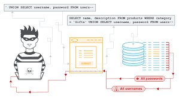
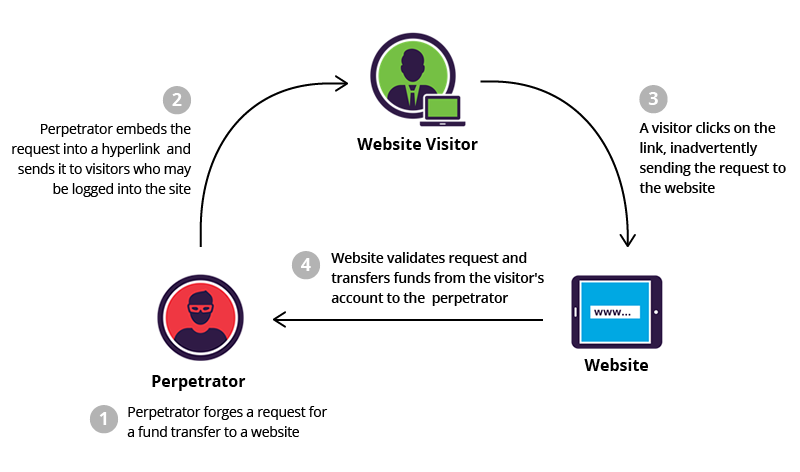
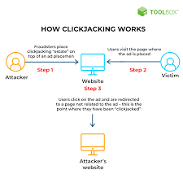
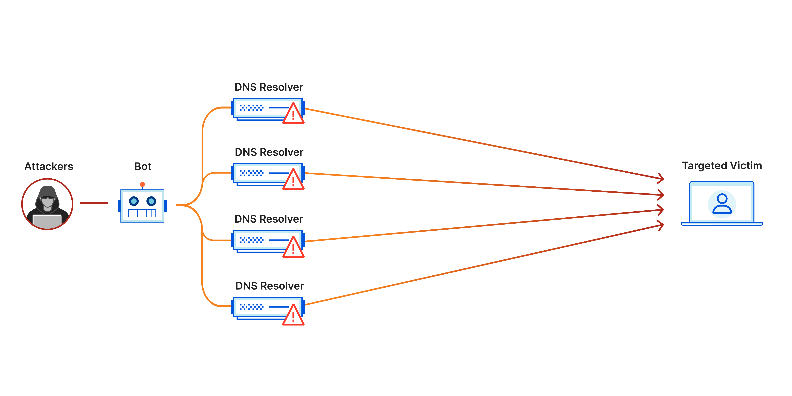
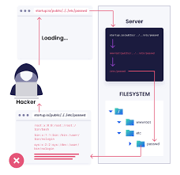
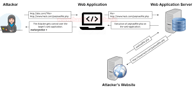

Task 3: Web Attacks Information Table
| Name | Web Attack Overview |
|---|---|
XSS (Cross-Site Scripting)

|
XSS allows attackers to inject malicious scripts into web pages viewed by other users.
These scripts can steal user data, such as cookies or session tokens.
It is one of the most common vulnerabilities found in web applications.
Learn more about XSS |
| SQL Injection  | SQL Injection occurs when an attacker manipulates a SQL query through user input,
allowing them to access or modify database information.
This can lead to unauthorized data exposure and loss of data integrity.
Learn more about SQL Injection |
| CSRF (Cross-Site Request Forgery)  | CSRF tricks a victim into submitting a malicious request.
It can lead to unauthorized actions being performed on behalf of the user without their knowledge.
Learn more about CSRF |
| Clickjacking  | Clickjacking is an attack where a user is tricked into clicking on something different from what they perceive,
potentially revealing confidential information or taking control of their computer.
Learn more about Clickjacking |
Man-in-the-Middle (MITM)

|
MITM is an attack where the attacker secretly intercepts and possibly alters the communication between two parties.
This can result in the theft of sensitive information.
Learn more about MITM |
| Denial of Service (DoS)  | DoS attacks aim to make a service unavailable by overwhelming it with a flood of requests.
This can crash servers and disrupt normal operations.
Learn more about DoS |
Brute Force Attack

|
A Brute Force Attack involves attempting many passwords or passphrases with the hope of eventually guessing correctly.
It is one of the simplest and most common forms of attacks.
Learn more about Brute Force Attacks |
| Directory Traversal  | Directory Traversal is a type of attack that allows attackers to access directories and files stored outside the web root folder.
This can expose critical system files and data.
Learn more about Directory Traversal |
| RFI (Remote File Inclusion)  | RFI allows attackers to include a remote file, usually through a script on the web server.
This can lead to remote code execution or data theft.
Learn more about RFI |
Session Hijacking

|
Session Hijacking is an attack where an attacker takes over a valid session between a user and a web server.
This allows the attacker to impersonate the user and perform actions on their behalf.
Learn more about Session Hijacking |